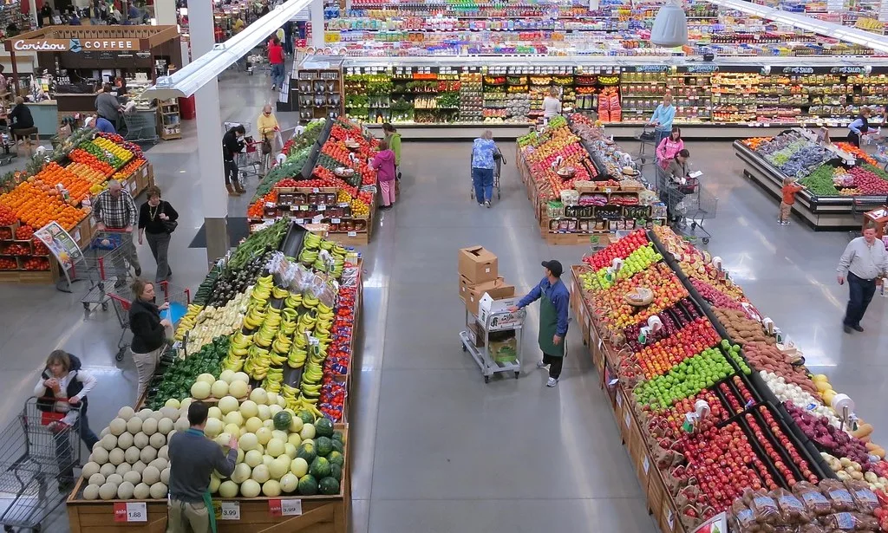

8월 소비자물가 3.1% 상승…두 달 만에 3%대, "통신비 기저효과 빼면 2.5%"
통계청이 2일 발표한 '8월 소비자물가 동향'에 따르면 지난달 소비자물가지수는 1년 전보다 3.1% 올랐다. 물가 상승률은 5월 3.1%, 6월 3.2%에서 7월 2.8%로 낮아졌다가 두 달 만에 다시 3%대로 올라섰다. 상승폭이 커진 것은 물가 오름세가 실제로 가팔라졌다기보다, 지난해 8월에 시행된 통신요금 할인의 기저효과가 크게 작용한 결과라는 것이 정부의 설명이다.
지난해 정부와 통신업계는 가계 통신비 부담을 덜기 위해 요금을 한시적으로 깎아줬는데, 그 효과가 사라지면서 올해 8월 통신 물가가 상대적으로 높게 잡혔다. 통계청은 이 요인이 이번 물가 상승률을 0.6%포인트가량 끌어올린 것으로 분석했다. 기획재정부는 이를 제외한 실제 물가 흐름은 2.5% 안팎으로, 여전히 2%대 중반 수준이라고 밝혔다.

품목별로는 등락이 엇갈렸다. 농산물과 축산물, 수산물을 묶은 농축수산물 가격은 1년 전보다 2.6% 내렸다. 여름철 폭염 피해에도 지난해 가격이 워낙 높았던 데 따른 기저효과가 작용한 결과로, 배추·시금치 등 일부 채소는 여전히 강세를 보였다. 반면 가공식품은 1.5% 올라 7월(1.0%)보다 오름폭이 확대됐고, 외식을 포함한 개인서비스와 전기·가스 등 공공요금도 상승했다. 계절적 요인과 정부 정책의 영향을 걷어낸 근원물가(식료품·에너지 제외)는 3.4% 올라, 물가의 바탕에 깔린 오름세가 아직 견고함을 보여줬다.
물가 상승률이 목표치를 웃도는 상황은 통화정책에도 부담이다. 한국은행의 물가안정 목표는 2%인데, 실제 물가는 올해 들어 대체로 3% 안팎에서 움직이고 있다. 한은은 최근 두 달 연속 기준금리를 올려 연 3.00%까지 끌어올렸다. 물가와 함께 가계부채, 원/달러 환율, 수입물가 등을 두루 고려한 결정으로, 당분간 금리를 낮추기 어려운 환경이 이어지고 있다.
당장의 걱정거리는 추석이다. 명절을 앞두고 과일·채소·육류 등 성수품 수요가 몰리는 데다, 올여름 기록적인 폭염과 잦은 호우로 일부 농산물의 작황이 나빠졌다. 정부는 배추·무·사과 등 주요 성수품을 평소보다 많이 풀고 할인 지원을 확대해 장바구니 물가를 관리하겠다는 대책을 내놨다. 비축 수산물 방출과 축산물 할인도 함께 추진된다.
가계가 느끼는 체감 물가는 지표보다 높다는 지적이 많다. 자주 사는 품목으로 구성한 생활물가지수는 전체 지수보다 더 크게 올랐고, 외식비와 각종 서비스 요금은 한 번 오른 뒤 잘 내려가지 않는 특성이 있어 누적 부담이 크다. 특히 저소득층일수록 소득에서 식료품·에너지 지출이 차지하는 비중이 높아 물가 상승의 충격을 더 크게 받는다. 정부는 이날 물가관계장관회의를 겸한 민생침해 범정부 대응 회의를 열어 성수품 수급과 가격 점검을 강화하기로 했다.
전망은 엇갈린다. 통신비 기저효과가 다음 달 이후 점차 사라지면 상승률이 다시 2%대로 내려갈 것이라는 관측이 있는 반면, 국제유가와 환율이 불안하고 가공식품·외식 가격의 오름세가 이어지고 있어 물가가 쉽게 잡히지 않을 것이라는 신중론도 나온다. 물가는 실질 소득과 소비 여력을 좌우하는 만큼, 정부와 한은은 하반기 경기 흐름과 함께 물가 경로를 면밀히 지켜볼 방침이다.